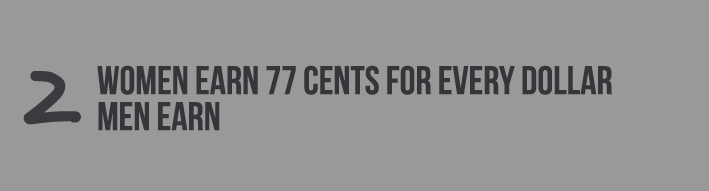

Both reproductive and economic policies are robbing women of their freedom, too. In the health realm, they are not granted full ownership of their body. And in the work sphere, with no childcare, they are oftentimes left with no choice but to choose their family life or their career. This system creates a cycle of patriarchy that keeps women oppressed—sometimes even without their knowing. Click on any of the list items to learn more.
"/> “We teach girls to shrink themselves, to make themselves smaller. We say to girls‚ ’You can have ambition, but not too much. You should aim to be successful‚ but not too successful. Otherwise you will threaten the man.’ Because I am female‚ I am expected to aspire to marriage. I am expected to make my life choices always keeping in mind that marriage is the most important. Now marriage can be a source of joy and love and mutual support. But why do we teach girls to aspire to marriage and we don‘t teach boys the same? We raise girls to see each other as competitors‾ not for jobs or for accomplishments‚ which I think can be a good thing‚ but for the attention of men. We teach girls that they cannot be sexual beings in the way that boys are. Feminist: the person who believes in the social‚ political and economic equality of the sexes.“
Quiz
-
1. Men and women are not treated equally.
- True
- False
Gender equality does not exist yet.
-
2. Feminists hate men.
- True
- False
Feminists believe in equal rights, that in no shape, way or form requires hating men.
-
3. On average, how much do women earn for every dollar men earn?
- 50 cents
- 77 cents
- 2 dollars
Even the amount of women earn is unequal.
-
4. What percent of plastic surgery is performed on men?
- 50 percent
- 20 percent
- 43 percent
- 5 percent
- 9 percent
How crazy is that, societal beauty standards for women clearly play a role in this.
-
5. What idea did Beyonce talk about in her song "Flawless"?
- Beauty
- Hell
- Heaven
- Reincarnation
- Feminism
Make sure to click the link and watch the TED talk, it is very interesting.
-
6. What percent of girls want to be thinner?
- 60
- 71
- 17
- 25
- 42
An incredible amount of women are unhappy with their bodies.
-
7. Which is not a system that keeps women repressed?
- Language
- Beauty Standards
- Polices
- Education
Women can get an education, this was not always the case
-
8. Feminists do not shave their legs.
- True
- False
This is one of the negative stereotypes associated with feminism.
-
9. Feminists can only be women.
- True
- False
Feminists can be men also, lots of famous men in history helped progress the Womens Movement.
-
10. Women rock.
- True
- False
Women are awesome, don't ever forget it.
Sources
http://www.independent.co.uk/news/people/news/beyonce-pens-open-feminist-essay-we-need-to-stop-buying-into-the-myth-of-gender-equality-9056148.html http://www.youtube.com/watch?v=hg3umXU_qWc http://blog.ted.com/2013/12/13/beyonce-samples-chimamanda-ngozi-adichies-tedx-message-on-surprise-album/ Notes from WMST 101 at UNC http://feministing.com/2014/01/13/quote-of-the-day-beyonce-on-the-myth-of-gender-equality/ http://all-free-download.com http://corbis.com https://code.google.com/p/jquiz/